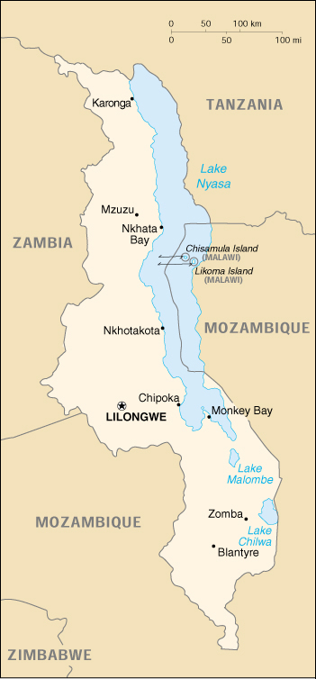

|
Malawi | |
| Introduction Geography People Government Economy Communications Transportation Military Transnational Issues | ||
|  | ||
| Malawi | Introduction | Top of Page |
| Background: | Established in 1891, the British protectorate of Nyasaland became the independent nation of Malawi in 1964. After three decades of one-party rule, the country held multiparty elections in 1994 under a provisional constitution, which took full effect the following year. National multiparty elections were held again in 1999. |
| Malawi | Geography | Top of Page |
| Location: | Southern Africa, east of Zambia |
| Geographic coordinates: | 13 30 S, 34 00 E |
| Map references: | Africa |
| Area: |
total:
118,480 sq km
land: 94,080 sq km water: 24,400 sq km |
| Area - comparative: | slightly smaller than Pennsylvania |
| Land boundaries: |
total:
2,881 km
border countries: Mozambique 1,569 km, Tanzania 475 km, Zambia 837 km |
| Coastline: | 0 km (landlocked) |
| Maritime claims: | none (landlocked) |
| Climate: | sub-tropical; rainy season (November to May); dry season (May to November) |
| Terrain: | narrow elongated plateau with rolling plains, rounded hills, some mountains |
| Elevation extremes: |
lowest point:
junction of the Shire River and international boundary with Mozambique 37 m
highest point: Sapitwa 3,002 m |
| Natural resources: | limestone, arable land, hydropower, unexploited deposits of uranium, coal, and bauxite |
| Land use: |
arable land:
34%
permanent crops: 0% permanent pastures: 20% forests and woodland: 39% other: 7% (1993 est.) |
| Irrigated land: | 280 sq km (1993 est.) |
| Natural hazards: | NA |
| Environment - current issues: | deforestation; land degradation; water pollution from agricultural runoff, sewage, industrial wastes; siltation of spawning grounds endangers fish populations |
| Environment - international agreements: |
party to:
Biodiversity, Climate Change, Desertification, Endangered Species, Environmental Modification, Hazardous Wastes, Marine Life Conservation, Nuclear Test Ban, Ozone Layer Protection, Wetlands
signed, but not ratified: Law of the Sea |
| Geography - note: | landlocked |
| Malawi | People | Top of Page |
| Population: |
10,548,250
note: estimates for this country explicitly take into account the effects of excess mortality due to AIDS; this can result in lower life expectancy, higher infant mortality and death rates, lower population and growth rates, and changes in the distribution of population by age and sex than would otherwise be expected (July 2001 est.) |
| Age structure: |
0-14 years:
44.43% (male 2,348,940; female 2,337,290)
15-64 years: 52.78% (male 2,741,622; female 2,825,966) 65 years and over: 2.79% (male 119,283; female 175,149) (2001 est.) |
| Population growth rate: | 1.5% (2001 est.) |
| Birth rate: | 37.8 births/1,000 population (2001 est.) |
| Death rate: | 22.81 deaths/1,000 population (2001 est.) |
| Net migration rate: | 0 migrant(s)/1,000 population (2001 est.) |
| Sex ratio: |
at birth:
1.03 male(s)/female
under 15 years: 1 male(s)/female 15-64 years: 0.97 male(s)/female 65 years and over: 0.68 male(s)/female total population: 0.98 male(s)/female (2001 est.) |
| Infant mortality rate: | 121.12 deaths/1,000 live births (2001 est.) |
| Life expectancy at birth: |
total population:
37.08 years
male: 36.61 years female: 37.55 years (2001 est.) |
| Total fertility rate: | 5.18 children born/woman (2001 est.) |
| HIV/AIDS - adult prevalence rate: | 15.96% (1999 est.) |
| HIV/AIDS - people living with HIV/AIDS: | 800,000 (1999 est.) |
| HIV/AIDS - deaths: | 70,000 (1999 est.) |
| Nationality: |
noun:
Malawian(s)
adjective: Malawian |
| Ethnic groups: | Chewa, Nyanja, Tumbuko, Yao, Lomwe, Sena, Tonga, Ngoni, Ngonde, Asian, European |
| Religions: | Protestant 55%, Roman Catholic 20%, Muslim 20%, indigenous beliefs |
| Languages: | English (official), Chichewa (official), other languages important regionally |
| Literacy: |
definition:
age 15 and over can read and write
total population: 58% male: 72.8% female: 43.4% (1999 est.) |
| Malawi | Government | Top of Page |
| Country name: |
conventional long form:
Republic of Malawi
conventional short form: Malawi former: British Central African Protectorate, Nyasaland Protectorate, Nyasaland |
| Government type: | multiparty democracy |
| Capital: | Lilongwe |
| Administrative divisions: | 24 districts; Blantyre, Chikwawa, Chiradzulu, Chitipa, Dedza, Dowa, Karonga, Kasungu, Lilongwe, Machinga (Kasupe), Mangochi, Mchinji, Mulanje, Mwanza, Mzimba, Ntcheu, Nkhata Bay, Nkhotakota, Nsanje, Ntchisi, Rumphi, Salima, Thyolo, Zomba; note - there may be three new districts named Balaka, Likoma, and Phalombe |
| Independence: | 6 July 1964 (from UK) |
| National holiday: | Independence Day, 6 July (1964) |
| Constitution: | 18 May 1994 |
| Legal system: | based on English common law and customary law; judicial review of legislative acts in the Supreme Court of Appeal; has not accepted compulsory ICJ jurisdiction |
| Suffrage: | 18 years of age; universal |
| Executive branch: |
chief of state:
President Bakili MULUZI (since 21 May 1994); note - the president is both the chief of state and head of government
head of government: President Bakili MULUZI (since 21 May 1994); note - the president is both the chief of state and head of government cabinet: 36-member Cabinet named by the president elections: president elected by popular vote for a five-year term; election last held 15 June 1999 (next to be held NA 2004) election results: Bakili MULUZI reelected president; percent of vote - Bakili MULUZI (UDF) 51.4%, Gwandaguluwe CHAKUAMBA (MCP-AFORD) 44.3% |
| Legislative branch: |
unicameral National Assembly (193 seats; members elected by popular vote to serve five-year terms)
elections: last held 15 June 1999 (next to be held NA 2004) election results: percent of vote by party - UDF 48%, MCP 34%, AFORD 15%, others 3%; seats by party - UDF 94, MCP 66, AFORD 29, others 4 |
| Judicial branch: | Supreme Court of Appeal; High Court (chief justice appointed by the president, puisne judges appointed on the advice of the Judicial Service Commission); magistrate's courts |
| Political parties and leaders: | Alliance for Democracy or AFORD [Chakufwa CHIHANA, president]; Malawi Congress Party or MCP [Gwanda CHAKUAMBA, president, John TEMBO, vice president]; Malawi Democratic Party or MDP [Kampelo KALUA, president]; National Independence Party; Social Democratic Party or SDP [Eston KAKHOME, president]; United Democratic Front or UDF [Bakili MULUZI] - governing party |
| Political pressure groups and leaders: | NA |
| International organization participation: | ACP, AfDB, C, CCC, ECA, FAO, G-77, IBRD, ICAO, ICFTU, ICRM, IDA, IFAD, IFC, IFRCS, ILO, IMF, IMO, Intelsat, Interpol, IOC, ISO (correspondent), ITU, NAM, OAU, OPCW, SADC, UN, UNCTAD, UNESCO, UNIDO, UNMIK, UPU, WFTU, WHO, WIPO, WMO, WToO, WTrO |
| Diplomatic representation in the US: |
chief of mission:
Ambassador Paul Tony Steven KANDIERO
chancery: 2408 Massachusetts Avenue NW, Washington, DC 20008 telephone: [1] (202) 797-1007 |
| Diplomatic representation from the US: |
chief of mission:
Ambassador Roger A. MEECE
embassy: Area 40, Plot 24, Kenyatta Road mailing address: P. O. Box 30016, Lilongwe 3, Malawi telephone: [265] 773 166 FAX: [265] 770 471 |
| Flag description: | three equal horizontal bands of black (top), red, and green with a radiant, rising, red sun centered in the black band |
| Government - note: | the executive exerts considerable influence over the legislature |
| Malawi | Economy | Top of Page |
| Economy - overview: | Landlocked Malawi ranks among the world's least developed countries. The economy is predominately agricultural, with about 90% of the population living in rural areas. Agriculture accounts for 37% of GDP and 85% of export revenues. The economy depends on substantial inflows of economic assistance from the IMF, the World Bank, and individual donor nations. In late 2000, Malawi was approved for relief under the Heavily Indebted Poor Countries (HIPC) program. The government faces strong challenges, e.g., to fully develop a market economy, to improve educational facilities, to face up to environmental problems, and to deal with the rapidly growing problem of HIV/AIDS. |
| GDP: | purchasing power parity - $9.4 billion (2000 est.) |
| GDP - real growth rate: | 3% (2000 est.) |
| GDP - per capita: | purchasing power parity - $900 (2000 est.) |
| GDP - composition by sector: |
agriculture:
37%
industry: 29% services: 34% (1998 est.) |
| Population below poverty line: | 54% (FY90/91 est.) |
| Household income or consumption by percentage share: |
lowest 10%:
NA%
highest 10%: NA% |
| Inflation rate (consumer prices): | 29.5% (2000) |
| Labor force: | 3.5 million |
| Labor force - by occupation: | agriculture 86% (1997 est.) |
| Unemployment rate: | NA% |
| Budget: |
revenues:
$490 million
expenditures: $523 million, including capital expenditures of $NA (FY99/00 est.) |
| Industries: | tobacco, tea, sugar, sawmill products, cement, consumer goods |
| Industrial production growth rate: | NA% |
| Electricity - production: | 1.025 billion kWh (1999) |
| Electricity - production by source: |
fossil fuel:
2.44%
hydro: 97.56% nuclear: 0% other: 0% (1999) |
| Electricity - consumption: | 950 million kWh (1999) |
| Electricity - exports: | 3 million kWh (1999) |
| Electricity - imports: | 0 kWh (1999) |
| Agriculture - products: | tobacco, sugarcane, cotton, tea, corn, potatoes, cassava (tapioca), sorghum, pulses; cattle, goats |
| Exports: | $416 million (f.o.b., 2000) |
| Exports - commodities: | tobacco, tea, sugar, cotton, coffee, peanuts, wood products |
| Exports - partners: | South Africa 16%, Germany 16%, US 15%, Netherlands 7%, Japan (1999) |
| Imports: | $435 million (f.o.b., 2000) |
| Imports - commodities: | food, petroleum products, semimanufactures, consumer goods, transportation equipment |
| Imports - partners: | South Africa 43%, Zimbabwe 14%, UK 5%, Germany 5%, Zambia, Japan, US (1999) |
| Debt - external: | $2.9 billion (2000 est.) |
| Economic aid - recipient: | $427 million (1999) |
| Currency: | Malawian kwacha (MWK) |
| Currency code: | MWK |
| Exchange rates: | Malawian kwachas per US dollar - 80.0946 (December 2000), 59.5438 (2000), 44.0881 (1999), 31.0727 (1998), 16.4442 (1997), 15.3085 (1996) |
| Fiscal year: | 1 July - 30 June |
| Malawi | Communications | Top of Page |
| Telephones - main lines in use: | 37,000 (1997) |
| Telephones - mobile cellular: | 7,000 (1997) |
| Telephone system: |
general assessment:
NA
domestic: fair system of open-wire lines, microwave radio relay links, and radiotelephone communications stations international: satellite earth stations - 2 Intelsat (1 Indian Ocean and 1 Atlantic Ocean) |
| Radio broadcast stations: | AM 9, FM 4 (plus 15 repeater stations), shortwave 3 (1998) |
| Radios: | 2.6 million (1997) |
| Television broadcast stations: | 1 (1999) |
| Televisions: | 0 (1999) |
| Internet country code: | .mw |
| Internet Service Providers (ISPs): | 8 (2001) |
| Internet users: | 10,000 (2000) |
| Malawi | Transportation | Top of Page |
| Railways: |
total:
789 km
narrow gauge: 789 km 1.067-m gauge |
| Highways: |
total:
16,451 km
paved: 3,126 km unpaved: 13,325 km (1997) |
| Waterways: |
144 km
note: on Lake Nyasa (Lake Malawi) and Shire Riverall |
| Ports and harbors: | Chipoka, Monkey Bay, Nkhata Bay, Nkhotakota, Chilumba |
| Airports: | 44 (2000 est.) |
| Airports - with paved runways: |
total:
6
over 3,047 m: 1 1,524 to 2,437 m: 1 914 to 1,523 m: 4 (2000 est.) |
| Airports - with unpaved runways: |
total:
38
1,524 to 2,437 m: 1 914 to 1,523 m: 14 under 914 m: 23 (2000 est.) |
| Malawi | Military | Top of Page |
| Military branches: | Army (includes Air Wing and Naval Detachment), Police (includes paramilitary Mobile Force Unit) |
| Military manpower - availability: | males age 15-49: 2,466,708 (2001 est.) |
| Military manpower - fit for military service: | males age 15-49: 1,265,893 (2001 est.) |
| Military expenditures - dollar figure: | $9.5 million (FY00/01) |
| Military expenditures - percent of GDP: | 0.76% (FY00/01) |
| Malawi | Transnational Issues | Top of Page |
| Disputes - international: | dispute with Tanzania over the boundary in Lake Nyasa (Lake Malawi) |
{kind=link}
{kind=link}